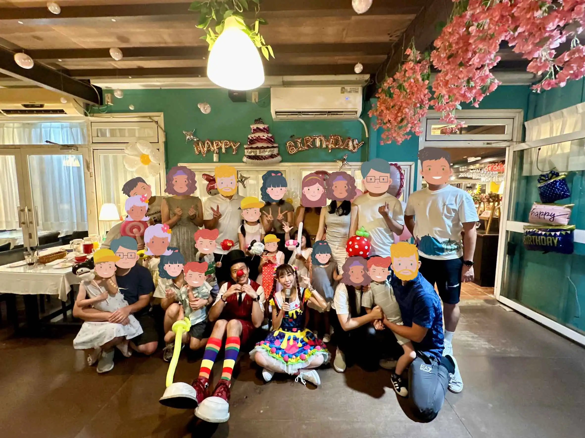
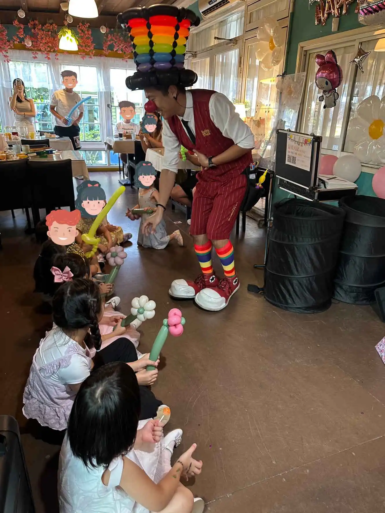

桃園生日派對策劃：魔術秀 × 唱跳姐姐 × 造型氣球
阿勃勒餐廳包場慶生紀實｜打造孩子開心、大人放心的「儀式感」派對體驗
📍 地點：桃園市大園區｜清惜的家 阿勃勒
桃園家庭派對首選：多元娛樂的一站式魅力
位於桃園大園區的 「清惜的家 阿勃勒」，以其充滿綠意與溫馨感的環境，成為在地包場辦理親子生日派對的熱門場地。在這次的慶生活動中，氣球大叔 Sony 獲邀與 「唱跳姐姐」 聯手，為小壽星與滿場的嘉賓打造一場沉浸式的歡樂饗宴。

節目亮點：魔術秀與動感唱跳的完美契合
一場成功的派對需要高潮迭起的節奏。活動一開始由 唱跳姐姐 帶領孩子們進行熱情的帶動跳，消除陌生感；隨後由 氣球大叔 Sony 帶來震撼感十足的 氣球魔術秀，並在互動中折製出一件件精緻的角色造型氣球。這種組合能確保現場笑聲不斷，同時滿足孩子對於視覺驚喜與動手拿禮物的雙重渴望。

- ✨ 一站式服務： 包含場地氣球裝飾建議、魔術主秀與互動唱跳，省去家長對接多家廠商的麻煩。
- 🛡️ 安心慶生： 專業表演者掌控現場秩序，讓家長能專心用餐與親友交流、拍照記錄。
- 🎁 客製禮物： 現場折製小朋友心儀的英雄或公主造型氣球，誠意滿滿。
「我們把派對的繁瑣細節化為魔法，是為了把最珍貴的擁抱與時間留給家人。」
專業推薦：桃園派對表演與造型氣球專家
氣球大叔 Sony 深耕桃園多年，不論是大園、桃園區、中壢或是青埔，我們致力於為每個家庭創造「獨家記憶」。如果您也正在尋找桃園地區的高品質生日派對表演，無論是餐廳包場、自家宅邸或社區交誼廳，Sony 都能提供您最專業的娛樂策劃服務。
💡 關於桃園生日派對表演的常見問題
- Q: 在桃園親子餐廳舉辦生日派對，為什麼建議預約魔術秀加上唱跳姐姐的組合？
- A: 這種一站式娛樂組合能完美掌握派對節奏。唱跳姐姐負責前段的「帶動跳」，能迅速消除孩子的陌生感並消耗過剩活力；氣球大叔 Sony 則負責中後段的「魔術秀」與「造型氣球」，透過視覺驚喜與實體禮物將氛圍推向最高潮。這種安排能讓家長安心陪賓客用餐聊天，同時確保活動從頭到尾都充滿笑聲與回憶。
- Q: 阿勃勒餐廳這類的包場空間，在規劃氣球表演與互動時需要注意什麼？
- A: 針對像阿勃勒這樣具備綠意與室內外空間的餐廳，氣球大叔會建議規劃一個約 2x2 米的表演主舞台區，並自備專業行動擴音設備。我們也會配合場地動線設計造型氣球的定點發送區。此外，我們的一站式方案也包含場地氣球裝飾建議，能協助家長在充滿質感的環境中融入繽紛的慶生元素，打造最具儀式感的慶生現場。
- Q: 桃園一站式生日派對策劃包含哪些具體服務內容？
- A: 我們提供全方位的娛樂方案，包括：30 分鐘高互動兒童魔術秀、60 分鐘專業造型氣球手折（自由點餐模式）、以及唱跳姐姐主題帶動。這套服務已成功在桃園大園、中壢、平鎮等多家親子餐廳獲得高度評價。我們不僅提供表演，更強調與孩子的共創體驗，讓每一位參加派對的孩子都能帶著驚喜與作品滿載而歸。
🎈 正在尋找桃園生日派對表演嗎？
如果您也希望為您的活動創造像現場一樣爆棚的人氣與驚喜，氣球大叔 Sony 是您的首選！我們專注於提供高品質的互動演出與情境佈置：
- 主題生日派對：一站式魔術唱跳方案、客製化造型氣球。
- 校園慶典活動：幼兒園畢業典禮表演、校慶園遊會聚客。
- 品牌推廣引流：親子餐廳週年慶、百貨假日快閃、門市慶開幕。
📅 本文整理於 2025 年 10 月 12 日，完整紀錄真實活動現場氛圍。